おまけ
トラジャの墓巡り、最後に脈絡なきおまけ画像を。
建物
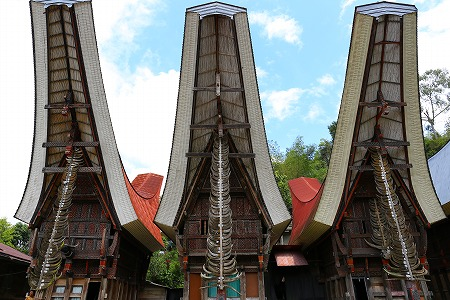
すっかりおなじみトンコナン。やはりこの角の突き出たような建物がトラジャの最大の特徴だ。
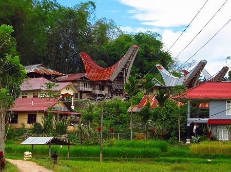
このように伝統的な家屋だけでなく、新築の家屋もトンコナン形式で造られる。
新しいタイプのものはトタン屋根が多い。
こちらはケテケスの伝統的なトンコナン。
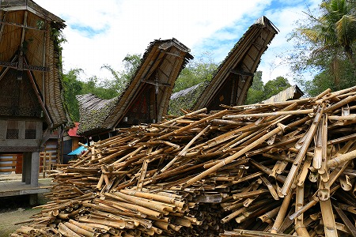
裏に大量に竹が積み上げられていた。
竹は半分に割ってあり、ほぞ穴が開いていた。
材質的にそんなに長持ちしない素材なので数十年に一度は屋根の吹き替えをするのだろう。
民家の庭先で見かけた東屋。
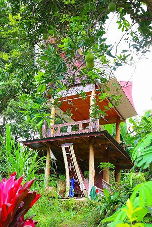
葬式の際に使ったものを残しているのだろう。何故かって？…わかんないです。
山間の集落の村はずれにあった小屋。
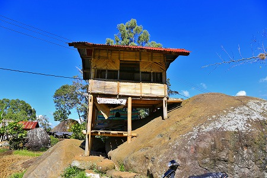
若者が数名小屋でたむろっていた。
シンプルだったが凄くいい雰囲気の建物だった。
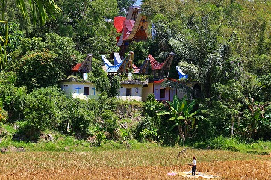
ちなみにお墓の屋根にもトンコナンスタイルは用いられている。
宿にて。
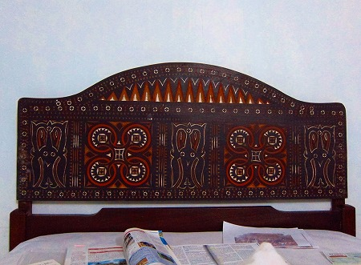
何の飾り気も設備もない宿だったが、ベッドの飾りだけはトラジャの伝統的な紋様が彫刻されていた。
特に中央と左右にある蛸のお化けみたいな紋様はあちこちで見かけた。
確か水牛となんかの動物とさらに何かが混ざり合った紋様だと言っていた。
ちなみにこの宿、すぐ裏で水牛や豚や鶏を飼っており、毎朝6時に餌をやるらしくその時間になると一斉に騒ぎ出す。
お陰で毎日超早起き出来ましたよ。しかも朝だけ超寒いし…。
米
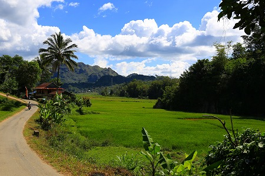
トラジャはどこに行っても田んぼが続く。
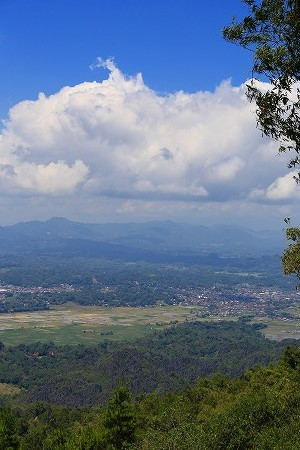
しかも標高差があり、基本熱帯なので二〜三毛作だという。
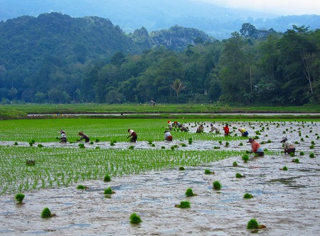
田植えはもちろん人力だ。
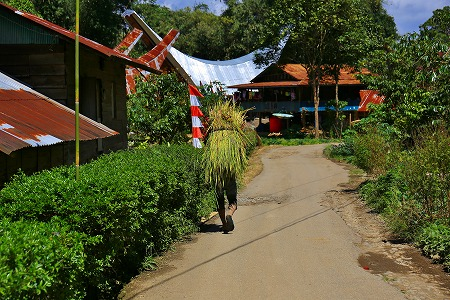
道を歩いていたら米が歩いているのかと思ってびっくりした。
他にも、たくさんの食材が生産されていたが。
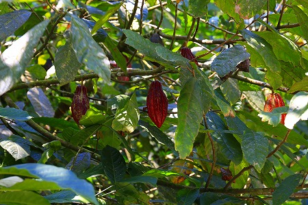
カカオは山間部のあちこちで見かけた。
そのほかトラジャといえばコーヒーだが、これは管理が厳しいのか偶然見かけるようなことはなかった。
牛
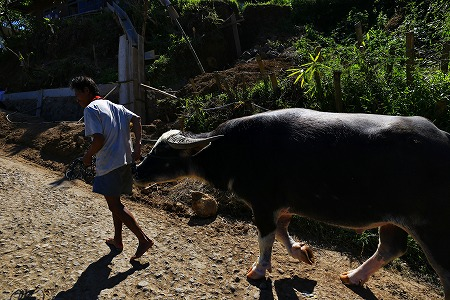
水牛はトラジャの象徴ともいえる動物だ。
葬式には生贄とされる水牛だが、普段の暮らしでも色々と使用されている。
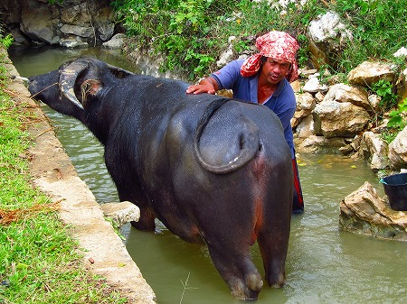
川で水牛を洗うおっさん。
乗り物
トラジャはバイクが多い。
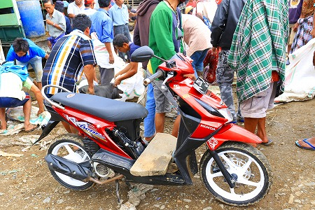
ボルの市場にて。
このバイクの足元の板に子豚を括り付けて泣き叫ぶ豚ちゃんを踏みつけて去っていきました…。

先にも載せたが一般的な乗り合いバスの光景。
ちなみに窓の外に見える小さな乗り物は1人〜2人乗りの三輪タクシー。
主に近距離の移動に使う。
こちらは乗り合いタクシー。
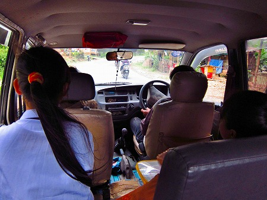
普通のワゴン車を三列シートに改造して走っている。
行先の地名や方向を把握してないとちんぷんかんぷんの乗り物だ。
その代わり冗談のように安い。
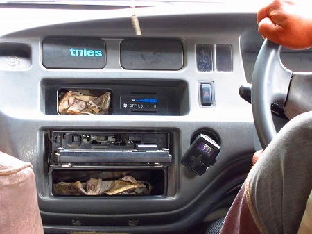
ダッシュボードには客が支払った低額紙幣がぎゅうぎゅうに詰め込まれていた。
ああ、この国のルピアはまさに紙屑扱いなんだー、と妙に納得してしまった。

さらにハイレベルの交通機関。
これには幸い乗る機会がなかったです。
街
タナトラジャ南部の村々を数時間歩いた末にたどり着いたのはマカレというトラジャの中心都市。
しかしそこはランテパオのような外国人観光客向けのホテルやレストランは少なく、大きな街だが地元の人のための街、といった雰囲気だ。
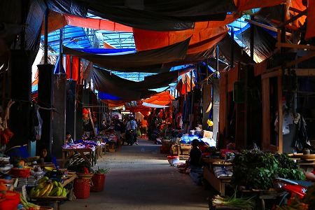
マーケットも激ローカルな雰囲気で、歩き疲れて何か飲み食いしたかったのだが、あまりいい店がなかった。
唯一入れそうな店は地元の女子高生が集うカフェテリア。
韓流スターのポスターが貼りまくられた店内で食べたハンバーガーは味がしなかったよ…。
ランテパオ郊外にあった鉄塔。
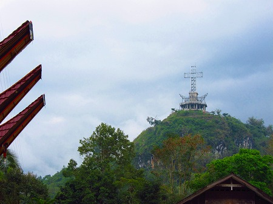
山のてっぺんにあったのでテレビ塔かと思ったら、十字架でした。
いや兼用なのか。
夜になったら光るんだろうな。カックイイ。
温泉
南部の村外れにあるマクラという温泉に寄ってみた。
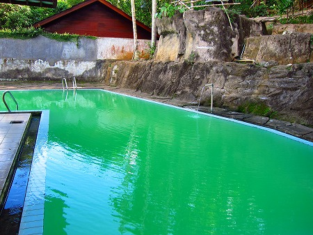
かなりローカルな場所な割には意外と立派な温泉施設で、日本で例えるとやや寂びれた温泉旅館の日帰り入浴っぽい雰囲気。
もちろんリゾート的な雰囲気はあまない。
浴槽、というかほぼプールなんですけど、バスクリンっぽい緑色の湯が。源泉かけ流しですね。
うっすらと硫黄臭がして、ぬるい湯はとても気持ちがよかった。
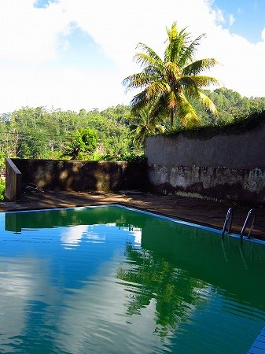
熱帯の風景を見ながら入る露天風呂。実に不思議。
人
ランテパオでは午後になるとなぜか連日パレードをやっていた。
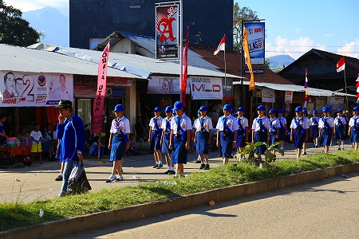
子供のダンスだったり、若い女性の行進だったり。
何だろう。一年中毎日やってるんだろうか？んなわけないか。
北部の山間部で休ませてもらった家。
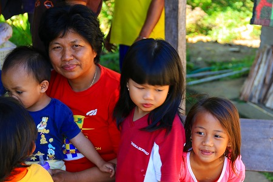
気が付いたらなぜかそこの家の家族に囲まれていた。
日本人が珍しいのだろうか。だろうな。
酒
トラジャで酒、といえばまずはビール。
イスラム教が少ないトラジャでは酒は比較的入手しやすい。
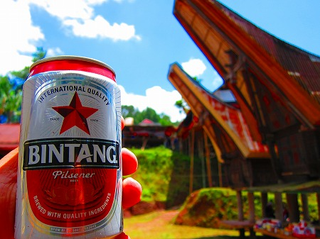
インドネシアと言えばビンタンビール。
朝、昼、晩とまあ、散々お世話になりました。
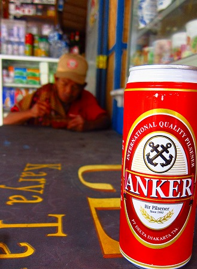
あとはアンカービール。大抵ビールはこの2銘柄。
最終的に主食になってきたりして…

ビールばっかりでもう飽きたー。
何か他の酒が飲みたーい！
と思いつつ、郊外のレストランでビンタンビールを飲んでいたら…
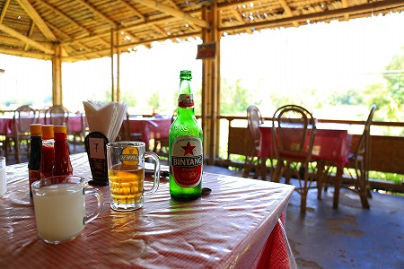
「ほかの酒を飲んでみないか？」と店員に言われた。おお、もっちろん呑みますとも！出来ればアル度高めの酒をオネシャス！
…で、来たのがグラスに入った白い酒。
コレ、ココナッツの液を発酵させた酒。いわゆるサル酒というやつ。これがまた凄い雑味。
どぶろくとヨーグルトとココナッツジュースが混ざり合ったような、そして何とも言えないキツイ酸味と匂いと味。
青臭くて、しかもチョット発酵臭がキツい…。
つまり決して美味しい酒ではないのだ。
しかも度数も数パーセント程度。
でもビールばかりの生活に飽きていたのと珍しさでグイグイ飲んでいた。
翌日、バイタク兄貴に「サル酒、どこに行ったら飲めるんだよー、連れてってよー！」
と頼み、彼の馴染みの居酒屋に連れてってもらった。
ほぼ掘っ立て小屋に近い弩ローカルの食堂兼居酒屋。これは外国人一人ではまず入れないレベルの店だ。
明るい時間だというのに皆さんいい塩梅に酔っぱらってる。いいぞいいぞ！
↓右端にあるピンク色の飲み物が例のサル酒だ。
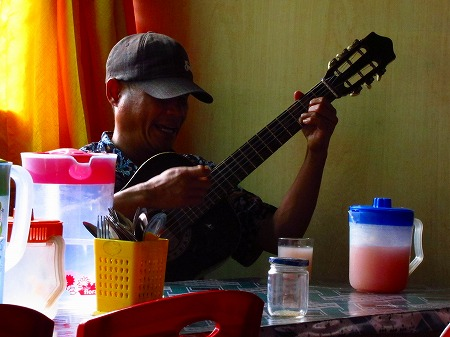
100均で売ってそうな容器に入っていて、グラスに注いで呑む。
郊外のレストランでは白っぽかったが、こちらのはピンク色。
恐らく発酵時間の差と思われるが、こちらの方が雑味がより強く、飲み干すのに一苦労した。
店中の酔っ払いが「うわ、日本人なのにサル酒のんでるよ！」と興味津々。
一口飲むたびに「上手いか？」と聞かれる。
まあ、美味くはないが彼らのプライドを傷つけるのもやぶさかではないのでグッと親指を立てる。
すると彼らも満面の笑みでグラスを掲げる。気が付けば1リットル入りの容器は空になる。
すると間髪入れずに店のおばちゃんが次のサル酒を目の前にドンと置く。
ええ〜やっと呑んだのにい〜。わんこそばかよ！と言いつつまたチビチビ呑む。
…というのを延々繰り返していた。
店の奥には盲目のシンガーがいて一曲歌ってくれた。
聞けば彼はトラジャでは有名な歌手で、世界中でコンサートをやっているのだという。
何故ならトラジャの人々は世界中に居住しているので、そういった人々が聞きに来るのだ。
ほろ酔い気分でトラジャの演歌を聞く。
ぼろぼろの店内で、酒は決して美味くないが心地よい時間だった。
ややいい気分になり（それでもアルコール度数が低いので泥酔はしない）バイタクで宿へ。
ちょっと待て。
バイタク兄貴、オマエ飲酒運転じゃん！
おしまい